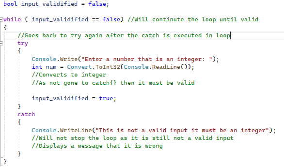
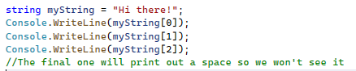
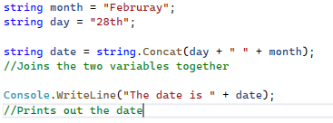
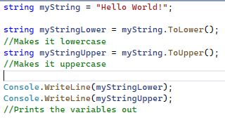

It's human nature to make mistakes but as humans we can easily correct them however, a program cannot. For example, if it tells us to enter in a number and we enter in a word we will need a second chance and this is where the try {} catch{} statement. The try (which we will place our normal code inside into) should execute as normal however, if there is an error this will jump immediately to the catch code which will continue the program with the mistake. For example, in our normal code which we place within the curly brackets of the try statement, we tell the user to enter a number and then convert the input to an integer. If this is successful (as the user has entered a valid number) this means that the catch statement will not be executed however, if the user enters a string when it tries to convert there will be an error. This causes it to not do the try statement and to jump to the catch statement where the rest will be executed. Let's put this program into place (with a few extra pieces of code):

As you can see in the code I have used a while loop, this means that the code will not end until it is valid. This can be used to force the user to enter a range such as 0-5 by using a try-catch and an if statement combined.
Next, I am going to implement the index finder, which implements what letter it is in the location of a string. For example, let's say we have a string called "My name is John" and we want to know what the fourth character is ("n") we can use the index finder. It is very similar to arrays in how it works as the starting character would be a 0 which is the 1st digit. Remember the 3rd character is a space so when we print out the character it may print a space that as a user we won't see. Now to do this we need to declare the variable which I will call myString and then we need to put the number (remembering the rule where the starting digit is a 0) of the location we want to find out within 2 square brackets []. For example, myString[0] will print the first character of the string. Let's now make a program with this information:

Another very useful technique we can use is joining strings together more widely known as concatenation. Firstly, let's declare our first 2 variables which will be the month (February) and the day of the month (28th) which we will combine to find the date. Next, we need to declare our string that we will combine the 2 variables with which I will call date and I must put the datatype before which is string. We then make this = to what we write next. After, we show that we are concatenating it to a string then write a dot, and then put Concat() to get string.Concat(). This shows to the program that we are combining two strings. Finally, we put our two strings within the Concat with a + symbol joining them. We can also within the Concat add a space within speech marks to space out the two strings otherwise there will be no space between each other. This can also be done within Console.Writeline to make it clearer when printing out variables. For example:

Finally, let's learn how to turn a string from all uppercase to lowercase. Firstly, let's declare our string name which will be myString = "Hello World!". Next, we must declare a new string called myStringLower (with the datatype declared). Then we make this equal to myString.ToLower();. This will not change the myString variable as it assigns it to a new variable. This can be done similarly with uppercase where instead of ToLower(); we use ToUpper();. Remember we use semi-colons at the end of each line to signal we are moving on to the next line. Let's try it out:

User Challenge: Create a piece of code that uses some of these bonus techniques